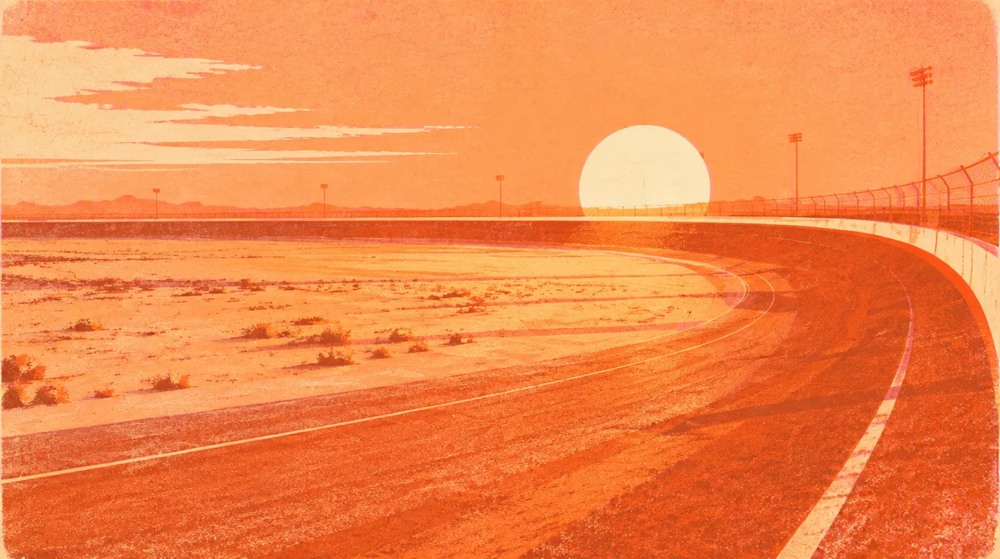

MUSIC · MAY 21 TO 23 · 2027 · Las Vegas
EDC · DAWN
Stay for the light. Keep the people.
240days out
- When
- May 21 to May 23, 2027
- Where
- Motor Speedway, Las Vegas · Directions
- Light
- Stay for the sunrise
In the mix
Foster is interested. David and Trent chose Dusk. Our Dawn chapter is still coming together.
Before this night
1 real photograph from Gordon's album that lead here.

Dig into the sound and story
4 short chapters. Open the ones that call to you.
THE ARTISTAlison, beyond a single sound.
Alison Wonderland’s artist profile connects her Sydney beginnings, festival performances, vocals and cello with records including Loner. Her official home now opens into Ghost World and FMU Records. Following an artist can mean following an entire evolving world.
THE SETBack at cosmicMEADOW.
Insomniac’s official recording of Alison Wonderland at EDC Las Vegas 2026 is a way back into that festival chapter. Let the full set have some room: the feeling is in how one moment carries you to the next, not only the peak.
THE WORLDA place with more than one center.
EDC describes each stage as its own meeting of technology and nature. Downtown EDC, performers and the spaces between stages are part of the event’s design too. A festival can hold the discovery that happens while you are walking toward the thing you planned.
OUR HISTORYThat look on our faces.
The photograph and short film in this collection are real EDC memories. The next Dawn chapter is still ahead. I want the people who shared those earlier nights to feel what I feel looking back: I am glad we made time for this.
Before we go
Artist recordings open on their own players. Not a promised setlist.
Swipe the picture, or use the arrow keys, for the next night.